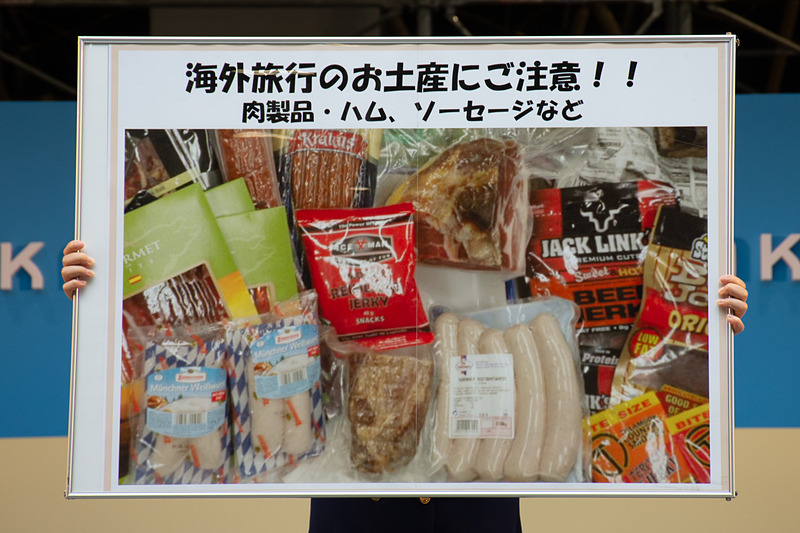

| หน้าแรก |
กฎระเบียบที่เกี่ยวข้องกับการนำเข้าสินค้าอาหารของญี่ปุ่น
|
ญี่ปุ่นเป็นประเทศที่นำเข้าสินค้าประเภทอาหารมากที่สุดในโลก เนื่องจากมีพื้นที่ทำการเกษตรเพียงร้อยละ 14 ของพื้นที่ประเทศเท่านั้น ทำให้ผลิตอาหารได้ไม่เพียงพอกับความต้องการบริโภคภายในประเทศและจำเป็นต้องนำเข้าสินค้าอาหารจากต่างประเทศเป็นจำนวนมาก
นอกจากนี้ การที่ญี่ปุ่นเป็นประเทศที่พัฒนาแล้วและมีรายได้เฉลี่ยต่อคนต่อปีสูงกว่า 30,000 ดอลลาร์สหรัฐฯ ญี่ปุ่นจึงเป็นประเทศที่มีกำลังซื้อสูง ทำให้ผู้ส่งออกสินค้าอาหารต่างๆ ทั่วโลกรวมทั้งไทยต่างเร่งขยายการส่งออกสินค้าอาหารไปจำหน่ายยังประเทศญี่ปุ่น ผู้ส่งออกไทยที่ประสงค์จะขยายการส่งออกสินค้าอาหารไปญี่ปุ่นควรทราบถึงกฎระเบียบต่างๆ ที่เกี่ยวข้องกับการนำเข้าสินค้าอาหารของญี่ปุ่นที่สำคัญ พอสรุปได้ดังนี้ 1. Domestic Animal Infectious Disease Control Law อยู่ในความรับผิดชอบของกระทรวงเกษตร ป่าไม้ และประมง (Ministry of Agriculture, Forestry and Fisheries) ของญี่ปุ่น สาระสำคัญ เป็นกฎหมายที่เกี่ยวข้องกับการป้องกันการเกิดและแพร่กระจายของโรคต่างๆ จากสัตว์และผลิตภัณฑ์จากสัตว์ที่นำเข้าจากต่างประเทศมาสู่สัตว์เลี้ยงในประเทศญี่ปุ่น โดยผู้นำเข้าต้องแจ้งขอรับการตรวจสอบเพื่อออกหนังสือรับรอง (Certificate) ก่อนการนำเข้ามาจำหน่ายในประเทศญี่ปุ่น ขอบเขต สัตว์และผลิตภัณฑ์จากสัตว์ที่ต้องผ่านการตรวจสอบ อาทิ ไก่ เป็ด ไข่ แฮม ไส้กรอกและเบคอน สำหรับสัตว์ที่มีกีบ Cloven-Hoofed Animals) เช่น โค กระบือ สุกร ฯลฯ ญี่ปุ่นอนุญาตให้นำเข้าได้จาก 43 ประเทศเท่านั้น เช่น สหรัฐอเมริกาและสหภาพยุโรป โดยห้ามนำเข้าจากประเทศอื่นๆ รวมทั้งไทย เนื่องจากเกรงว่า อาจมีการแพร่ระบาดของโรคปากและเท้าเปื่อย (Foot and Mouth Disease) โรค Rinderpest และโรค African Swine Fever ยกเว้นผลิตภัณฑ์จากสัตว์ดังกล่าวได้มีการแปรรูปโดยผ่านความร้อนด้วยอุณหภูมิ 70 ?C เป็นเวลาไม่ต่ำกว่า 30 นาที จึงจะอนุญาตให้มีการนำเข้าไปจำหน่ายในประเทศญี่ปุ่นได้ 2. Plant Protection Law อยู่ในความรับผิดชอบของกระทรวงเกษตร ป่าไม้ และประมงของญี่ปุ่น สาระสำคัญ เป็นกฎหมายที่เกี่ยวข้องกับการป้องกันการเกิดและแพร่กระจายของโรคต่างๆ จากผลผลิตทางการเกษตรที่นำเข้าจากต่างประเทศมาสู่พืชและผลผลิตทางการเกษตรในประเทศญี่ปุ่น โดยผู้นำเข้าต้องแจ้งขอรับการตรวจสอบ เพื่อออกหนังสือรับรอง (Certificate) ก่อนการนำเข้าไปจำหน่ายในประเทศญี่ปุ่น ขอบเขต สินค้าที่ต้องผ่านการตรวจสอบ อาทิ ผักและผลไม้ อย่างไรก็ตาม การที่ไทยเป็นประเทศที่จัดอยู่ในเขตที่อาจมีการแพร่ระบาดของโรคพืชและแมลงวันผลไม้ชนิด Melon Fruit Flies และ Oriental Fruit Flies ทำให้ญี่ปุ่นอนุญาตให้นำเข้าผลไม้สดจากไทยได้เพียง 5 ชนิดเท่านั้น คือ สับปะรด ทุเรียน มะพร้าว กล้วยดิบ และมะม่วง 3. Quarantine Law อยู่ในความรับผิดชอบของกระทรวงสาธารณสุขและสวัสดิการ (Ministry of Health and Welfare) ของญี่ปุ่น สาระสำคัญ เป็นกฎหมายที่เกี่ยวข้องกับการตรวจสอบโรคติดต่อบางชนิด เช่น ไข้เหลืองและกาฬโรค จากคนและสัตว์ที่เดินทางเข้าประเทศญี่ปุ่นโดยเรือหรือเครื่องบิน เพื่อป้องกันการแพร่ระบาดของโรคดังกล่าวสู่ญี่ปุ่น ขอบเขต สิ่งมีชีวิตทุกชนิดจาก 73 ประเทศ ยกเว้นไทยต้องผ่านการตรวจสอบก่อนเข้าสู่ประเทศญี่ปุ่น นอกจากนี้ยังมีสินค้าประมง (Fishery Products) อาทิ กุ้งสดแช่เย็นแช่แข็งจากบางประเทศรวมทั้งไทยที่ต้องผ่านการตรวจสอบก่อนการนำเข้าไปจำหน่ายในประเทศญี่ปุ่น 4. Food Sanitation Law อยู่ในความรับผิดชอบของกระทรวงสาธารณสุขและสวัสดิการของญี่ปุ่น สาระสำคัญ เป็นกฎหมายที่เกี่ยวข้องกับการป้องกันผู้บริโภคในญี่ปุ่นจากการบริโภคสินค้าที่อาจเป็นอันตรายต่อสุขภาพ โดยผู้นำเข้าต้องแจ้งขอรับการตรวจสอบเพื่อออกหนังสือรับรองการนำเข้า (Import Notification) ก่อนการนำเข้าไปจำหน่ายในประเทศญี่ปุ่น ขอบเขต สินค้าที่ต้องผ่านการตรวจสอบ อาทิ อาหาร ยา ของเด็กเล่น น้ำยาทำความสะอาด ฯลฯ 5. The Law Concerning Standardization and Proper Labeling of Agriculture and Forestry Product หรือ Law for Japanese Agricultural Standard (JAS) อยู่ในความรับผิดชอบของกระทรวงเกษตร ป่าไม้ และประมงของญี่ปุ่น สาระสำคัญ เป็นกฎหมายที่เกี่ยวข้องกับการรับรองมาตรฐานคุณภาพสินค้าเกษตรและป่าไม้ โดยผู้ผลิตสินค้าทั้งในญี่ปุ่นและต่างประเทศสามารถยื่นความจำนง เพื่อขอรับการตรวจสอบมาตรฐานคุณภาพสินค้าได้โดยใช้หลักความสมัครใจ (Voluntary) หากสินค้าผ่านการตรวจสอบ ก็จะได้รับการประทับตรา JAS ลงบนสินค้า ซึ่งจะช่วยให้ผู้บริโภคในญี่ปุ่นมีความมั่นใจในการเลือกซื้อสินค้าดังกล่าวมากยิ่งขึ้น ขอบเขต สินค้าที่สามารถขอรับการตรวจสอบ อาทิ บะหมี่สำเร็จรูป นมและผลิตภัณฑ์ น้ำผลไม้ อาหารกระป๋อง ฯลฯ ปัจจุบันมีสินค้าอาหารของไทยหลายชนิดที่ส่งออกไปญี่ปุ่นโดยผ่านการตรวจสอบก่อนการนำเข้าตามหลักเกณฑ์ดังกล่าวข้างต้น เช่น กุ้งสดแช่เย็นแช่แข็ง อาหารทะเลกระป๋อง ไก่สดแช่เย็นแช่แข็ง ฯลฯ แต่ก็มีสินค้าบางชนิดที่ญี่ปุ่นเคยตรวจพบว่ามีปริมาณสารเคมีตกค้างเกินระดับมาตรฐานที่กำหนด ทำให้ญี่ปุ่นเข้มงวดในการตรวจสอบก่อนการนำเข้า เช่น ผักคะน้า คื่นไช่ ผักชี โหระพา และกะเพรา ในขณะที่เนื้อสุกรแปรรูปของไทยเมื่อนำไปผ่านความร้อนตามที่ญี่ปุ่นกำหนด รสชาติจะเปลี่ยนแปลงไป จึงไม่เป็นที่นิยมของผู้บริโภคชาวญี่ปุ่น |
|---|
|  |